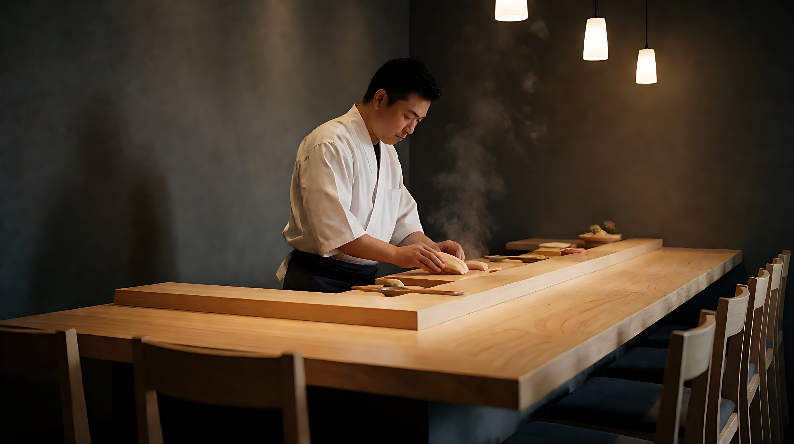
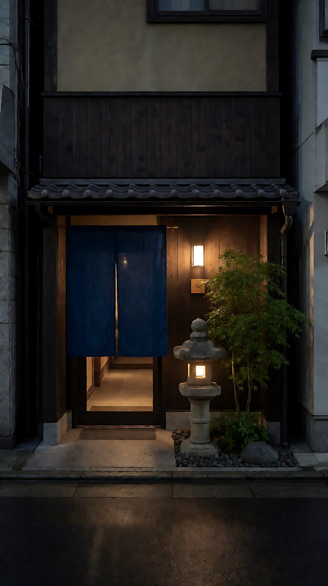
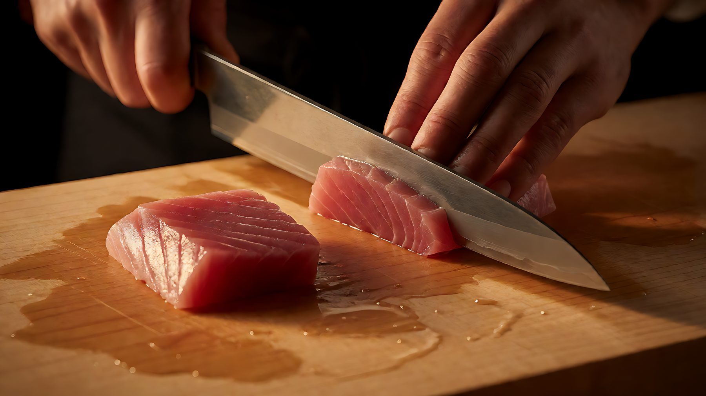
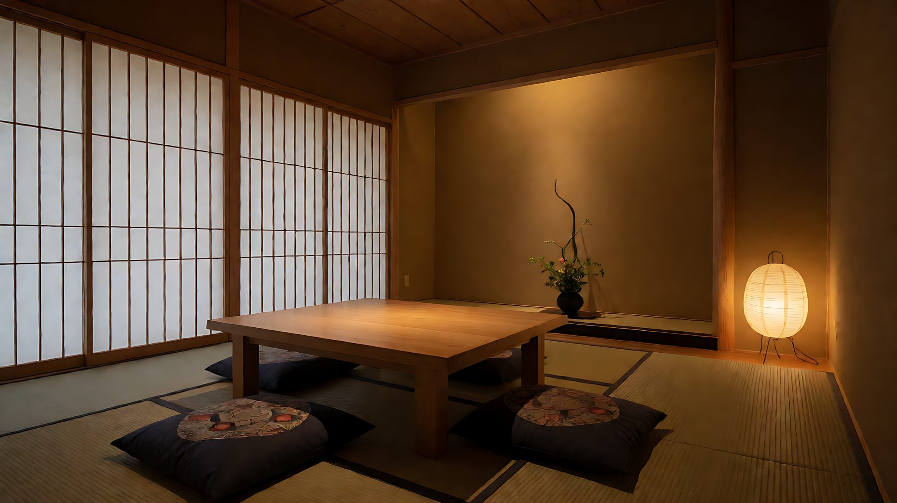
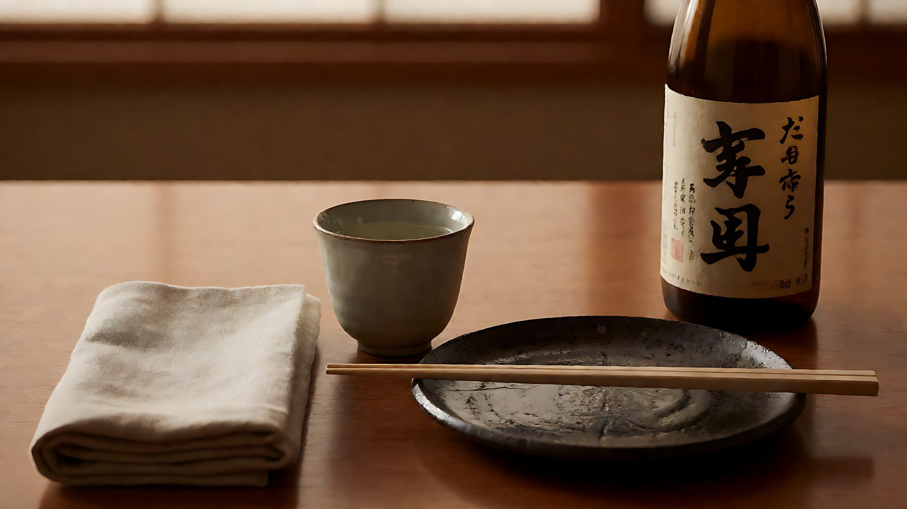

旬 SHUN不時不食
只選當造，不強求四季常備。菜單每兩至三週按漁獲與蔬菜調整，缺貨時寧可換菜，也不以次等食材代替。

關於我們ABOUT
「旬」是一年之中食材最鮮美的短暫時節。我們把店子開在中環一條不張揚的街道，只設八席檜木板前與一間個室，讓每位客人都坐在最接近料理的位置。
每日清晨，我們按當造的漁獲與蔬果決定當日菜單：由魚市場直送到店的鮮魚，到自家熬製的出汁、醃漬與甘味，皆由板前在主理。菜單隨季節改動，每次到訪都可能遇見不同的味道。

料理理念PHILOSOPHY
日本料理的根本，不在複雜，而在「剛剛好」——把當造的食材，用最適合它的方式，在最好的時間送到客人面前。我們以三件事守住這個分寸。
只選當造，不強求四季常備。菜單每兩至三週按漁獲與蔬菜調整，缺貨時寧可換菜，也不以次等食材代替。
出汁以昆布與鰹節每日現熬，漬物自家醃製，甘味亦在店內完成。備長炭直火燒烤，讓魚脂與肉汁留在食材裡面。
只有八席，所以我們記得每位客人的口味與節奏：酒喝得慢一點，菜就上得慢一點。料理是按你的時間，而不是按我們的時間。

刀與板之間的距離，就是味道的分寸。板前の仕事 ｜ CRAFT
環境ATMOSPHERE
八席板前看得到料理的過程，個室適合商談與家庭聚會。空間以檜木、和紙與墨色為主，燈光調至最適合看清食材的亮度。


營業資訊VISIT
| 午市 ｜ ランチ | 12:00 – 15:00（最後點餐 14:30） |
|---|---|
| 晚市 ｜ ディナー | 18:00 – 23:00（最後點餐 21:30） |
| 休息日 | 逢星期日及公眾假期 |
| 席數 | 板前 8 席・個室 1 間（4–6 人） |
座位有限，建議提前預約。如需包場或 8 人以上安排，請直接與我們聯絡。
線上訂座RESERVATION
填寫以下資料並按「經 WhatsApp 送出」，訂座資料會即時傳給我們，我們會盡快回覆確認。你也可以直接致電訂座。
板前只有八席，晚市經常滿座。我們建議提前三至七天預訂；週末與公眾假期前夕敬請更早安排。